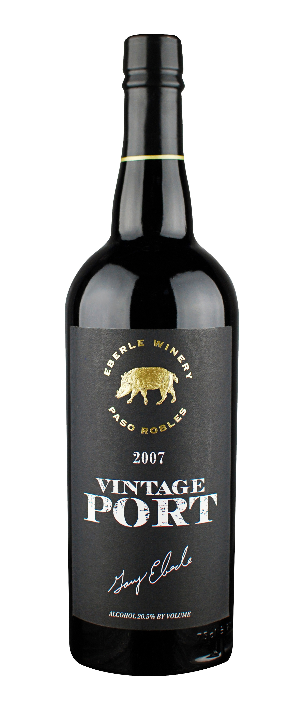
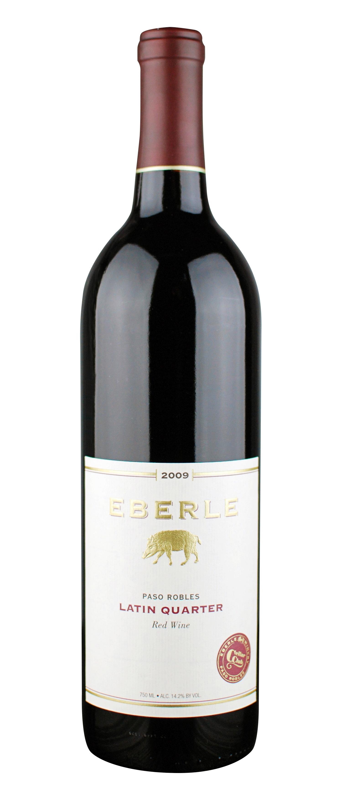
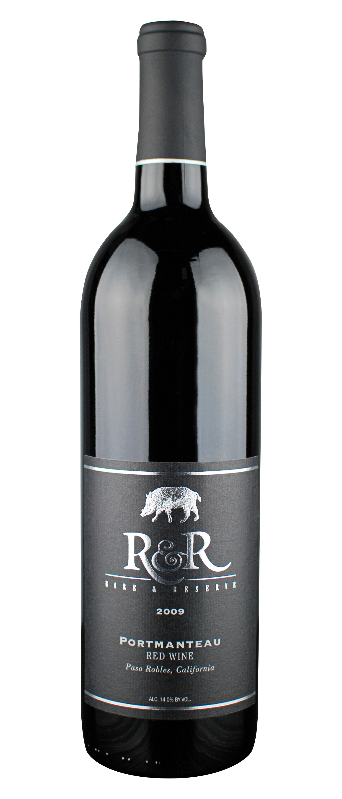
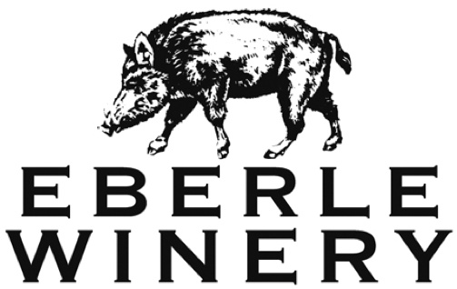
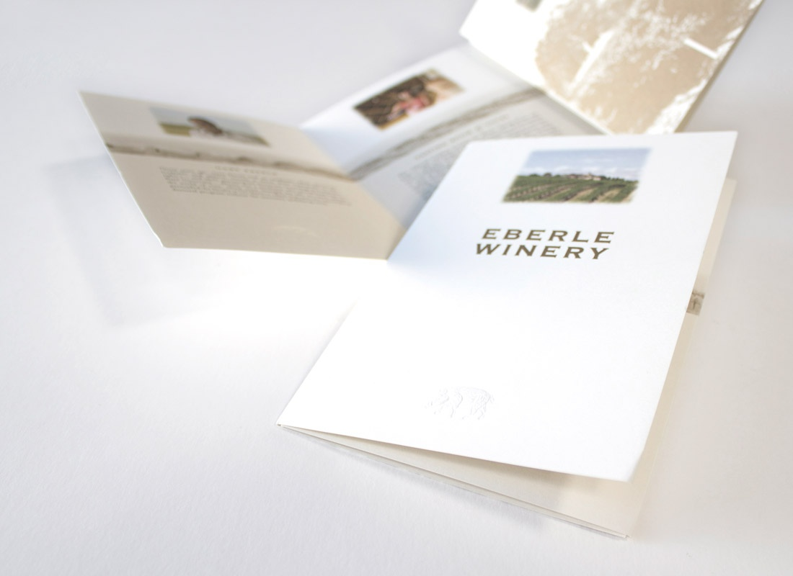
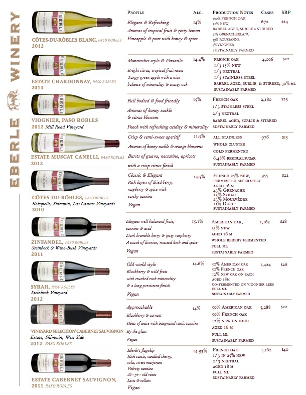
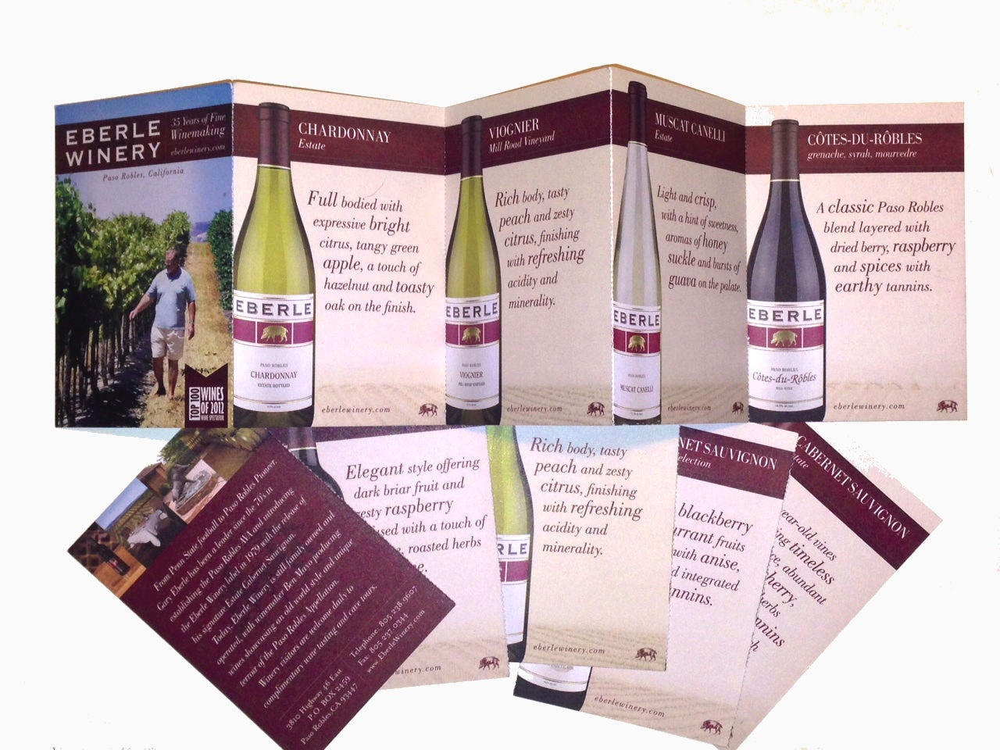

EBERLE WINERY / Paso Robles, California
Wine Club Brand Development
Brand / Packaging / Collateral
Wine-club branding expressed through label and packaging design, creating a distinct identity within the larger Eberle Winery brand. Print collateral and presentation resources extend the system across supporting materials.
THE WORK






